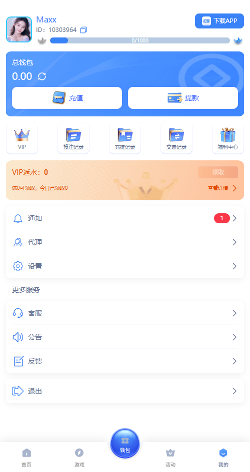
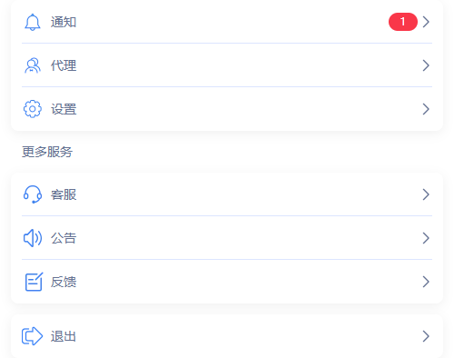
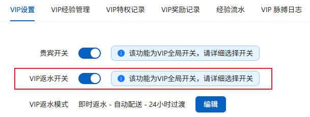
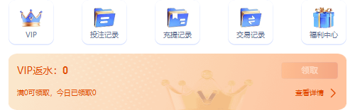
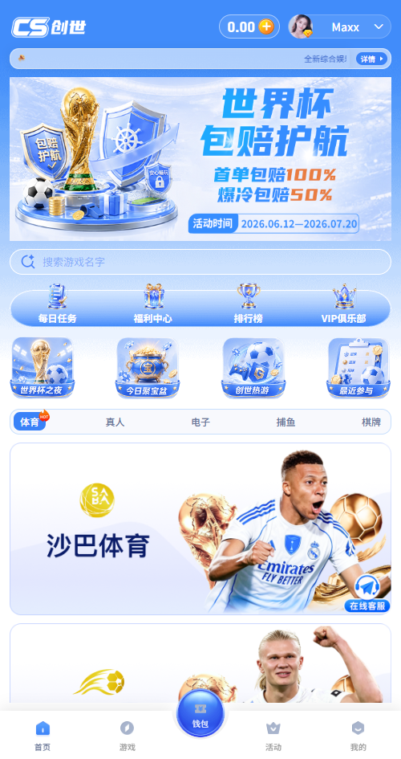

VIP配置功能需求
- 需求描述：
- 当前运营侧未开通VIP返水策略，前台页面中仍然显示与VIP返水相关内容，且无法正常使用，降低用户体验
- 而针对VIP返水入口开关当前颜色并不突出，无法有效引导用户
- VIP俱乐部开关与前台相关入口配置
- 解决方案：
结合后台的的vip返水开关，当开关关掉，前台页面中VIP返水的内容均为隐藏
当开关打开，前台页面中显示VIP返水的内容并增强突出进入vip返水页面的入口
- 需求范围：
1. 前台页面：个人中心



通过后台中“会员管理”→“VIP管理”→“VIP设置”中的“VIP返水开关”
- 开关关闭时，如左图，隐藏VIP返水内容
- 开关打开时，如右图，显示VIP返水内容
- 显示返水信息后，对应的领取按钮需要更加突出鲜明显示
※ 突出鲜明样式最终由UI设计师确定最终样式


领取

前台页面中“首页”&“个人中心”VIP入口处，按照之前优化需求中提及的先行判断VIP中配置内容是否为空，如果为空点击前台页面中VIP入口将弹出toast提示“敬请期待！”若判断配置内容不为空，则需判断后台对应的“贵宾开关”
- 贵宾开关=关，点击VIP入口时弹出toast提示“敬请期待！”，“福利中心”VIP页签隐藏
- 贵宾开关=开，点击vip入口进入vip中心后判断vip返水开关状态
- 若VIP返水开关为关，在VIP中心内的内容也针对返水的内容也需要进行隐藏